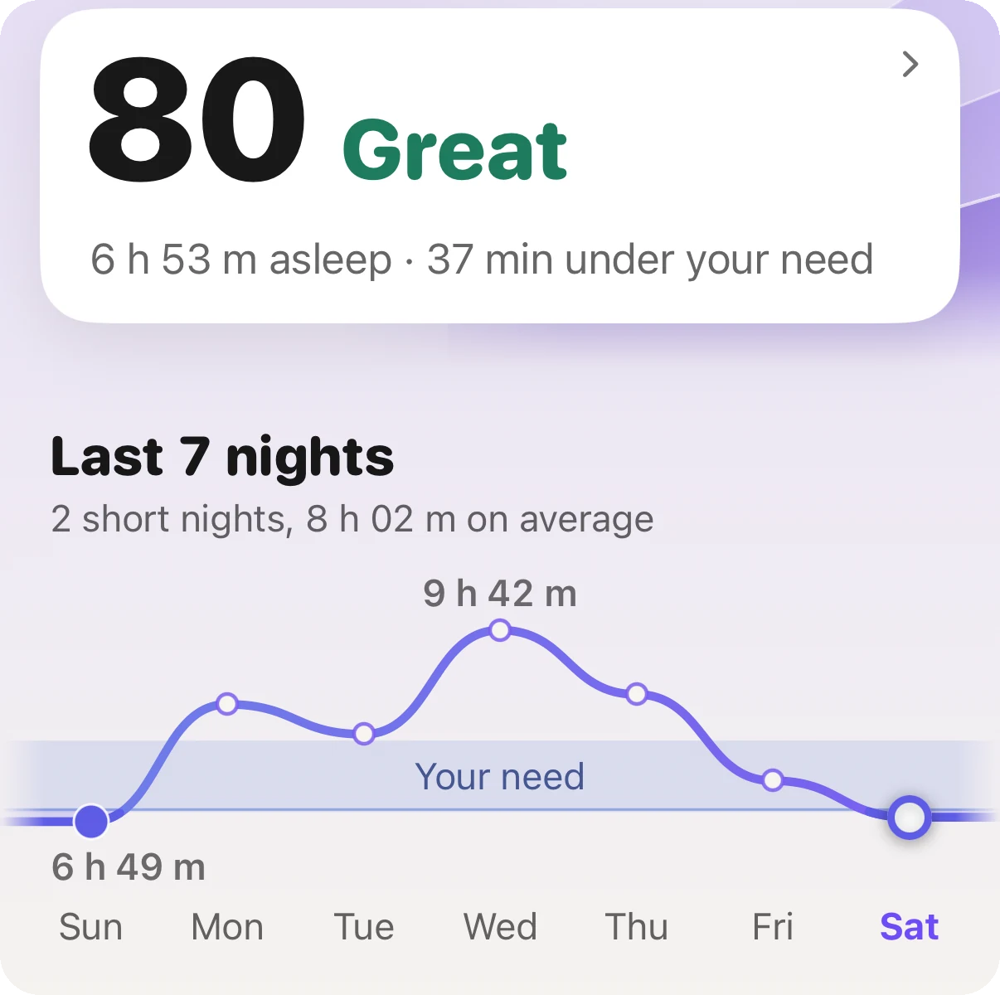
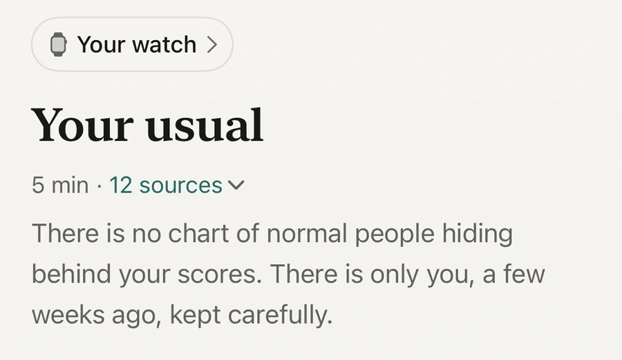

Concept · Sleep

The first change shows on the first night: a lower heart rate in your sleep and a higher HRV. Alcohol's effect on the night belongs to the night of the drink, so it goes when the drink goes. Slower things take the month. In one study of people who stopped for a month, blood pressure and weight both fell. A watch can show the first kind of change. It cannot show your liver.
It keeps your body in a more alert state while you sleep. In a Finnish study, 4,098 working adults wore a heart monitor on nights with and without alcohol, and each person was compared with their own alcohol-free nights. With alcohol, heart rate in the first hours of sleep was higher and heart rate variability, HRV, was lower. The share of the first three hours that the body spent in a recovery state dropped by 9 percentage points after a low amount, 24 after a moderate amount and 39 after a high amount (Pietilä and colleagues, 2018).
How much of the early night's recovery was lost
Being fit or young did not protect against it. The effect showed in both sexes and at every activity level.
The next day carries some of it too. A Cochrane review of 32 trials found that a larger amount of alcohol kept heart rate raised for up to 24 hours (Tasnim and colleagues, 2020). That is why your resting heart rate can read high the day after.
Because alcohol does two opposite things in one night. A review of the sleep laboratory studies found that it shortens the time it takes to fall asleep and deepens the first half of the night, and then disturbs the second half. At moderate and high amounts it also delays and reduces REM sleep (Ebrahim and colleagues, 2013).
On a watch, the second half is the part you can see: more time awake towards morning, and a heart rate that stays up. Do not read too much into the minutes of each sleep stage. A watch estimates stages from movement and heart rate, and the estimate is rougher than the chart makes it look.
The night-time numbers, and they change at once. The effect belongs to the night of the drink, so a night without alcohol looks the way your alcohol-free nights always did: a lower sleeping heart rate, a higher HRV and a calmer second half.
How much you see depends on where you start. If you had a drink most evenings, your watch learned your usual from those nights. In the first week your numbers will read better than your usual, and over the next two to four weeks the usual catches up. If you rarely drank, there is little to see, and that is a real result too.
A watch can show the night. It cannot show your liver.
Keep one caution in mind. A cold, hard training, a late heavy meal, a hot bedroom or a stressful week move the same numbers. One good night proves nothing. A good week starts to mean something.
The slower things. In a London study, 94 moderate to heavy drinkers stopped for one month and 47 others carried on. In those who stopped, systolic and diastolic blood pressure each fell by about 6%, weight by 1.5%, and a measure of insulin resistance by about a quarter. Nothing changed in the group that kept drinking. The study was not randomised, so it shows what happened, not proof of the cause (Mehta and colleagues, 2018).
How much you drank matters here as well. Across trials, cutting down lowered blood pressure in people who had more than two drinks a day, and the more they cut, the more it fell. In people who drank less than that, cutting down changed little (Roerecke and colleagues, 2017).
How people feel is harder to measure. In a University of Sussex survey of people who finished Dry January, about seven in ten said they slept better. They chose to take part and reported it themselves, so read that as an experience and not as a measurement (University of Sussex, 2019; de Visser and Piper, 2020).
If you drink heavily every day, do not stop suddenly on your own. Withdrawal can be dangerous, so talk to a doctor first.

Your usual, not an average person'sEvery score in Aera is read against your own recent weeks. That is what makes a month of change visible, and it is why the first weeks of a new habit read better than usual.
Aera, for iPhone and Apple Watch
Aera reads your sleep, your sleeping heart rate, your HRV and your resting heart rate against your own usual, the range your own recent weeks set. When a night sits outside it, the screen says so in plain words. While there is too little data, it says it is still learning.
Aera has no drink counter and does not know whether you drank. It shows what your body did. Its notes explain what moves each number, alcohol included, and name the study behind the claim. If you log blood pressure, you can tag a reading with Alcohol last night.
The last 30 days of every score are free, which is a dry month from its first night to its last. There is no account.
Aera is not a medical device. It cannot tell you how much alcohol is safe for you.
Yes. In a study of 4,098 adults, heart rate in the first hours of sleep was higher and HRV lower on nights with alcohol, compared with the same person's nights without. The more they drank, the bigger the change.
The night-time effect belongs to the night of the drink, so the first alcohol-free night already looks different. Slower changes, such as blood pressure and weight, took about a month in the study that measured them.
It can show the nights: a lower sleeping heart rate, a higher HRV and less time awake in the second half. It cannot show your liver or your long-term risk. Compare weekly averages with the weeks before, not single nights.
In the Finnish study even a low amount, up to about half a litre of beer for a 75 kg person, reduced the body's recovery in the first three hours of sleep by 9 percentage points. Larger amounts reduced it by 24 and 39.
Related field notes: what is sleeping heart rate · watch sleep stages are an estimate
Related guides: What is a good sleep score? · What is a normal Apple Watch HRV? · What is a normal resting heart rate?
 Or scan with your iPhone
Or scan with your iPhoneFree to start. No account. Works with the watch you already wear.